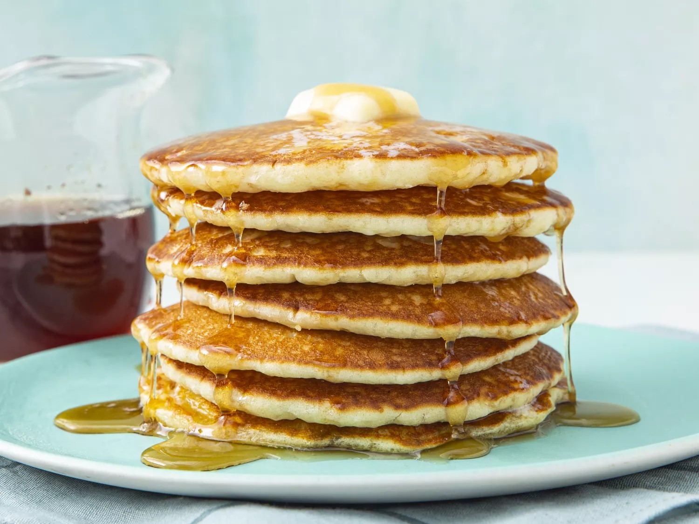

Pancake Recipe

Description
A very light and fluffy pancake recipe that requires fresh buttermilk!
Ingredients
- Flour
- Sugar
- Leaveners
- Salt
- Buttermilk
- Milk
- Eggs
Steps
- Mix the dry ingredients: Combine flour, sugar, baking powder,
baking soda, and salt in a large bowl.
- Mix the wet ingredients: Beat the buttermilk, milk, eggs, and melted butter together
in a separate bowl. Do not combine the wet and dry ingredients until right
before you cook the pancakes.
- Make the pancakes: Add the wet ingredients to the dry ingredients and mix with a wooden
spoon or fork until the mixtures are just-blended. Scoop the batter onto a hot, oiled griddle and
cook until the pancake is bubbly on the top. Flip with a spatula and cook until both sides are brown.
Visit For more information